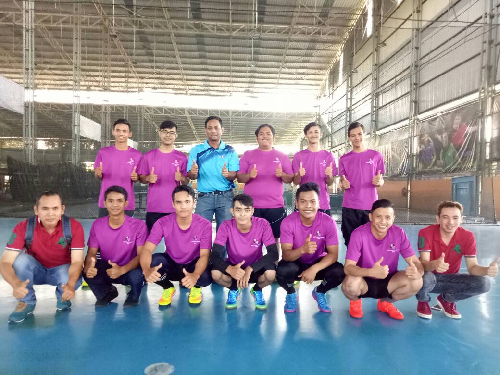
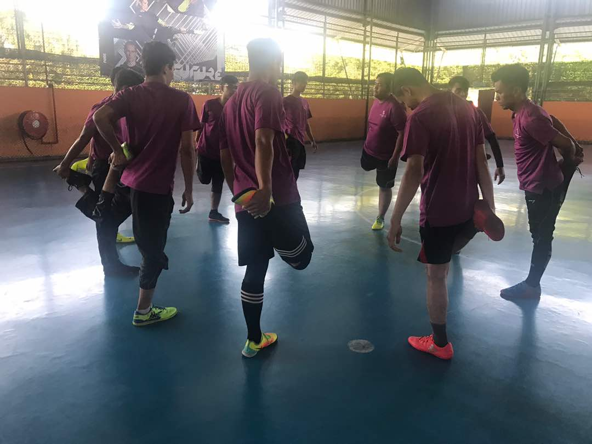
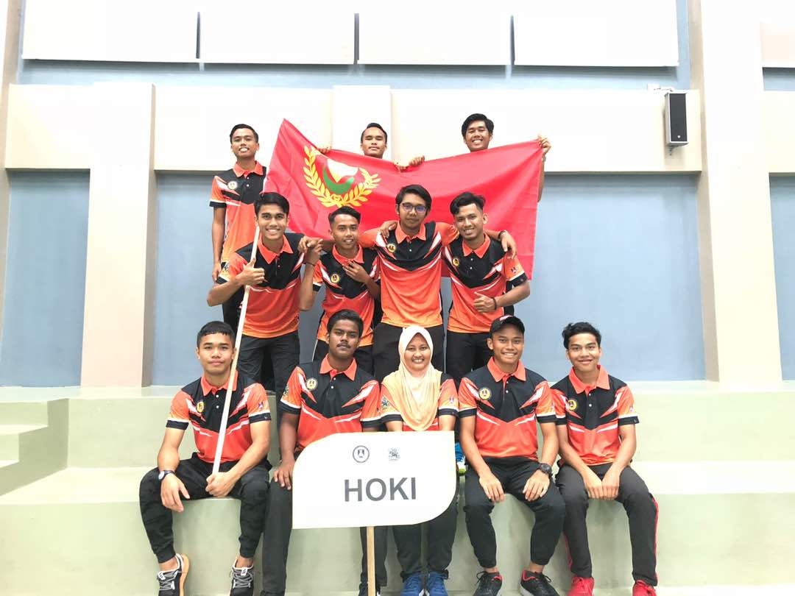
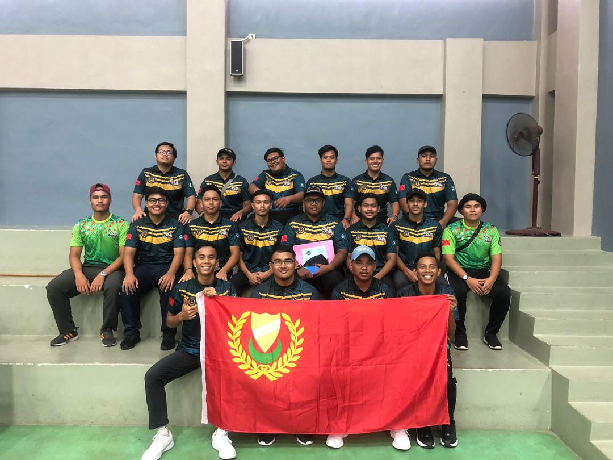

Based on my experience there are lots of things that happens in my life and now I am 20 years old. So now I want to share a few things that I feel it is valuable to share with you guys. The first one is about my life before I get in the university. Before I continues the study at the UiTM Kedah, I was working at the KFC restaurant. I have been working at there for 3 months and then I need to continues my study. My home is about 50 minutes from the KFC restaurant. So, every day I need to come out early because I don’t want be late. From there I learn on how to become a punctual. It is important to be punctual in everything that we do and as we know that time is gold. Every week, I will join others KFC members to play futsal. One day, there are selection for KFC NORTHERN FUTSAL. So my branch has send me as one of the player and every week I need to go for the trainings. This is very valuable experience for me because I can get know many people from others KFC and can gain my experience because can play with many talented players. Until today I still contact with them although I have stop working at the KFC.
 After that, experience as a student at the Universiti Teknologi Mara Kedah or UiTM Kedah and I’m in the last semester. I was studying in library information. Although I don’t like this course but I’m very grateful because if not everyone has a chance to get in the university. And now I just need to follow the flow and keep studying. In UiTM Kedah I get many friends especially from my teammates and classmates. They always help me when I have problems. As a student, I must know how to spend my money wisely. Sometimes we need to buy many books because it will be used in the class. I learn to save my money to make sure that I can use the money for my future. Other than that, I also active in sports such as rugby, handball, football and hockey. With my hardworking, I have been playing for the KARISMA for UiTM Kedah. For the first KARISMA I have playing hockey for UiTM Kedah and for the second KARISMA I have playing rugby for UiTM Kedah. I’m very happy when in know that I was selected for the KARISMA. It is pleasure to play with others skilful players. This have gain my knowledge and improve my skill.
 There still a lot of things that I want to share with you guys but I think it is enough for now and I will share with you guys next time!! Don’t worry...